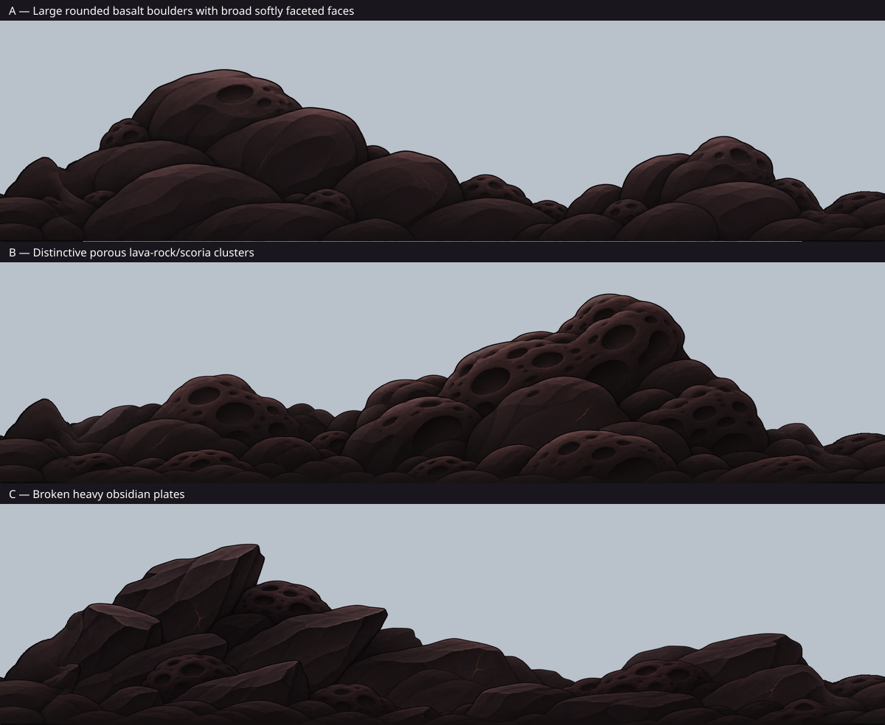

Cinderheart closer rock background
Three dark, dimensional volcanic rock bands behind the playable terrain. Continuous order: A → B → C → A.
Suggested camera factors: close rocks 0.75×, terrain 1.0×, nearest foreground 1.2×. Terrain is held fixed here to show relative parallax. The rock layer is raised behind the floor in this example; lower it for a more bottom-aligned arrangement.
Three variations · transparency overview
